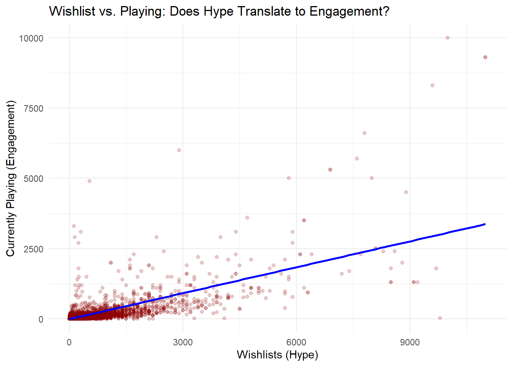
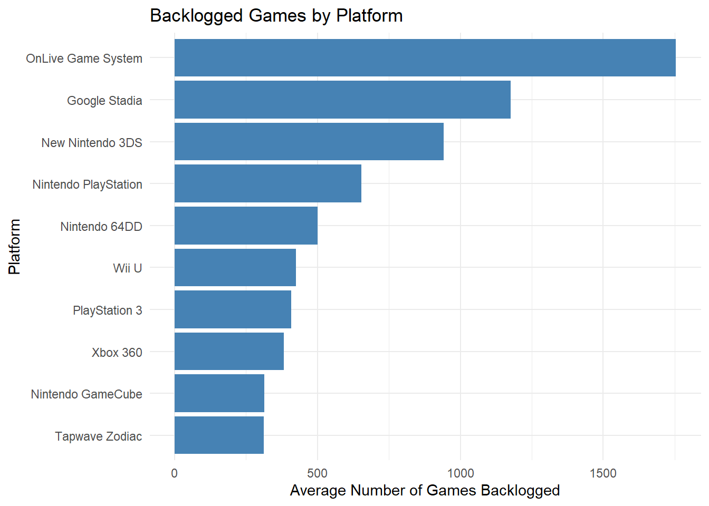
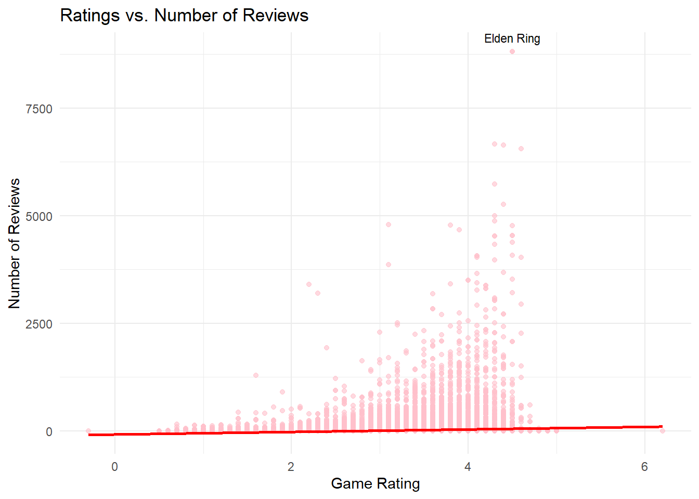
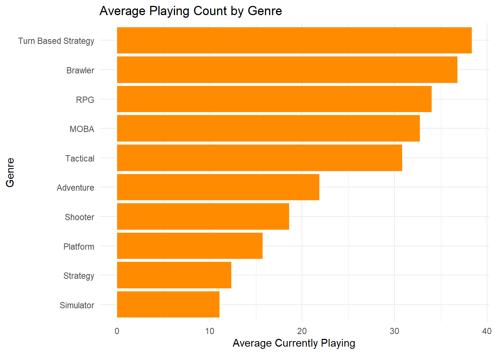
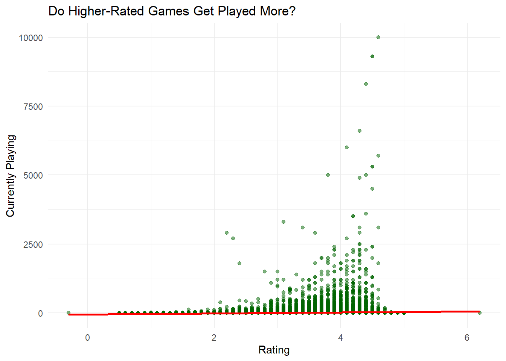
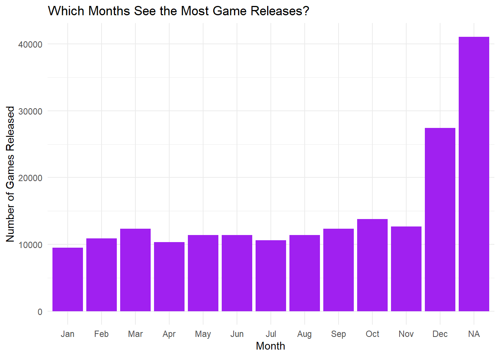
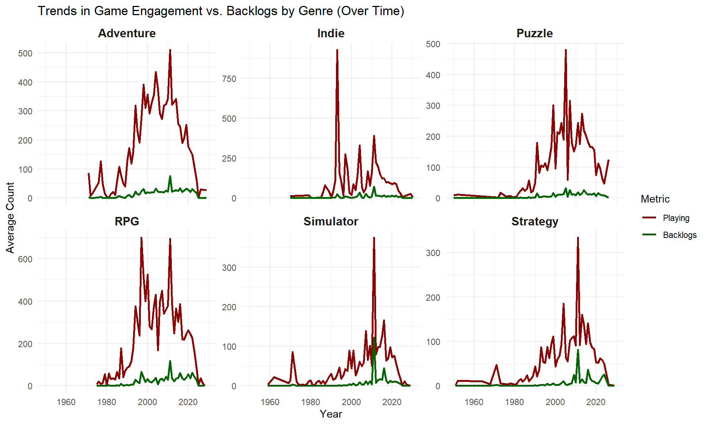
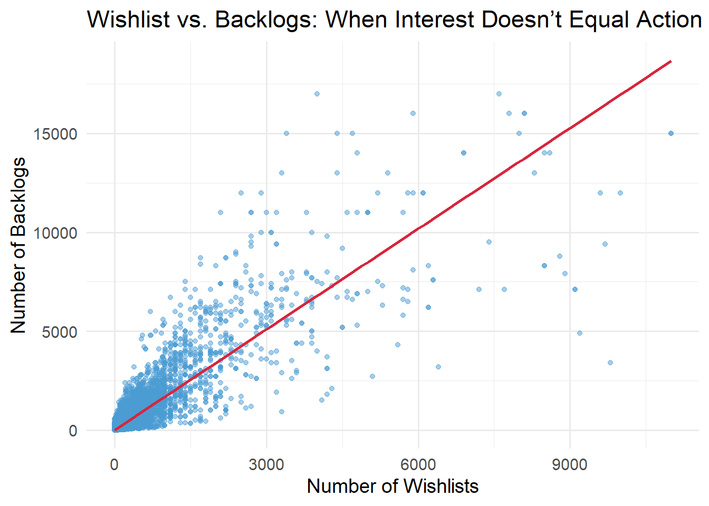
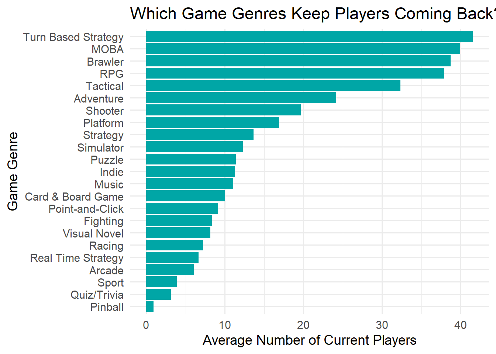

# Reading in the "Games" data
videogame_data <- read.csv("games.csv")All-Time Video Game Statistics
DSA_406_001_SP25_project_vmbaxi
Initial Data Exploration and Motivation
Reading in the Dataset
Inspecting the Dataset
# Checking dimensions, first and last few rows
dim(videogame_data)[1] 195209 10head(videogame_data) id name date rating reviews plays
1 1000001 Cathode Ray Tube Amusement Device 1947-12-31 3.6 85 149
2 1000002 Bertie the Brain 1950-08-25 3.0 26 46
3 1000003 Nim 1951-12-31 1.9 9 26
4 1000004 Draughts 1952-08-31 2.8 9 30
5 1000005 OXO 1952-12-31 3.1 22 80
6 1000006 Pool 1954-06-26 3.1 12 33
playing backlogs wishlists
1 1 42 72
2 0 9 17
3 0 2 8
4 0 4 7
5 0 11 15
6 0 3 4
description
1 The cathode ray tube amusement device is the earliest known interactive electronic game to use a cathode ray tube (CRT). It is a device that records and controls the quality of an electronic signal. The strength of the electronic signals produced by the amusement device is controlled by knobs which influences the trajectory of the CRT's light beam. The device is purely electromechanical and does not use any memory device, computer, or programming. The player turns a control knob to position the CRT beam on the screen; to the player, the beam appears as a dot, which represents a reticle or scope. The player has a restricted amount of time in which to maneuver the dot so that it overlaps an airplane, and then to fire at the airplane by pressing a button. If the beam's gun falls within the predefined mechanical coordinates of a target when the user presses the button, then the CRT beam defocuses, simulating an explosion.
2 Currently considered the first videogame in history. A tic-tac-toe clone.
3 The Nimrod was a special purpose computer that played the game of Nim, designed and built by Ferranti and displayed at the Exhibition of Science during the 1951 Festival of Britain. It was the first digital computer exclusively designed to play a game, though its true intention was to illustrate the principles of the (then novel) digital computer for the public.
4 A game of draughts (a.k.a. checkers) written for the Ferranti Mark 1 computer by Christopher Strachey at the University of Manchester between 1951 and 1952. In the summer of 1952, the program was able to "play a complete game of Draughts at a reasonable speed".
5 OXO was a computer game developed by Alexander S. Douglas in 1952 for the EDSAC computer, which simulates a game of Noughts and crosses, also sometimes called Tic-tac-toe. OXO is the earliest known game to display visuals on a video monitor. To play OXO, the player would enter input using a rotary telephone controller, and output was displayed on the computer's 35×16 dot matrix cathode ray tube. Each game was played against an artificially intelligent opponent.
6 A game of pool (billiards) developed by William George Brown and Ted Lewis in 1954 on the MIDSAC computer, intended primarily to showcase the computing power of the MIDSAC. "The game displayed a 2-inch rendition of the pool cue for the players to line up their shots and ran a simulation of the colliding and ricocheting balls in real-time, implementing a full game of a cue ball and 15 frame balls for two players. Graphics were drawn in real-time on a monochrome 13" point plotting X-Y display, the screen being updated by the program 40 times a second (that is, in a normal in-game situations with 2 to 4 balls moving at once). However, for time constraints, the table and its pockets weren’t drawn by the computer graphics, but were rather drawn manually onto the display using a grease pencil." - Norbert Landsteiner for masswerk.attail(videogame_data) id name date rating reviews plays
195204 1204007 Hometown Poker Hero NA 0 0
195205 1204008 Duke Nukem II Remastered 4.5 0 4
195206 1204009 Deadoxer NA 0 0
195207 1204010 Lottso! Express NA 0 0
195208 1204011 Little White Man vs. X NA 0 0
195209 1204012 Lost Lagoon 2: Cursed and Forgotten NA 0 1
playing backlogs wishlists
195204 0 0 0
195205 0 1 2
195206 0 1 0
195207 0 0 0
195208 0 1 0
195209 0 0 0
description
195204
195205 A remaster by Blaze Entertainment as part of Duke Nukem 1+2 Remastered which is set to be released exclusively for Evercade in Duke Nukem Collection 1.
195206 This is a small horror game in which you have to escape.
195207
195208 Attention: Attention, attention, attention!!! Sometimes the game automatically locks enemies, press the tab key to unlock it. (At the beginning, pressing tab is to lock the enemy) Other operations are in the legal terms
195209 Escape from a mysterious and dangerous island in Lost Lagoon 2: Cursed & Forgotten! After waking up shipwrecked, you realize that you have been cursed by powers beyond your understanding. Break the curse quickly because malevolent islanders lurk in the lush landscape and are dead set on making you their next victim! Find a way to return home before it's too late.nrow(videogame_data)[1] 195209ncol(videogame_data)[1] 10Brief Description
The dataset contains information about various video games, including their titles, genres, release years, backlogs, and ratings.
Dataset was acquired through Kaggle. can be accessed through this link: https://www.kaggle.com/datasets/gsimonx37/backloggd?select=games.csv
Motivation
Understanding video game trends can help answer key industry questions, such as:
- What factors contribute to a game’s success?
- Are certain platforms or genres more successful than others?
- How do different genre trends change over time?
- What types of games have higher/lower scores?
- What is the popular and least popular game of all time and is there a correlation to those types of games having certain critic scores?
Hypothesis
A potential hypothesis to test:
- “Game developers spend millions building hype—but are players actually playing the games they wishlist?”
- Games with higher wishlist counts are more likely to end up in user backlogs than be actively playing.”
Ethical Considerations
- Bias Awareness: Recognizing potential biases, such as favoring certain game genres or assuming popularity equals quality.
- Data Integrity: Ensuring the dataset is accurate and not misrepresented.
- Representation: Consideration of indie vs. AAA developers
Table Creation / Data Dictionary
data_dictionary <- data.frame(
Variable_Name = colnames(videogame_data),
Class = sapply(videogame_data, class),
Continuity = sapply(videogame_data, function(x) ifelse(is.numeric(x), "Continuous", "Discrete")),
Description = c(
"Game ID Number",
"Game Title",
"When it was Released",
"What is the Viewership Rating",
"How many Reviews",
"How many Plays the game has",
"How many are Playing",
"How many people put it to the side to play later, Backlogs",
"How many people added to the Wishlist",
"Description of The game"
)
)
summary(videogame_data) id name date rating
Min. :1000001 Length:195209 Length:195209 Min. :-0.30
1st Qu.:1051405 Class :character Class :character 1st Qu.: 2.50
Median :1102074 Mode :character Mode :character Median : 3.00
Mean :1102931 Mean : 2.97
3rd Qu.:1154452 3rd Qu.: 3.50
Max. :1204012 Max. : 6.20
NA's :131670
reviews plays playing backlogs
Min. : -1.000 Min. : -1.0 Min. : -1.000 Min. : -1.00
1st Qu.: 0.000 1st Qu.: 0.0 1st Qu.: 0.000 1st Qu.: 0.00
Median : 0.000 Median : 2.0 Median : 0.000 Median : 1.00
Mean : 9.211 Mean : 135.6 Mean : 4.331 Mean : 39.89
3rd Qu.: 1.000 3rd Qu.: 10.0 3rd Qu.: 0.000 3rd Qu.: 5.00
Max. :8814.000 Max. :83000.0 Max. :10000.000 Max. :17000.00
wishlists description
Min. : -1.00 Length:195209
1st Qu.: 0.00 Class :character
Median : 0.00 Mode :character
Mean : 20.11
3rd Qu.: 3.00
Max. :11000.00
data_dictionary Variable_Name Class Continuity
id id integer Continuous
name name character Discrete
date date character Discrete
rating rating numeric Continuous
reviews reviews integer Continuous
plays plays integer Continuous
playing playing integer Continuous
backlogs backlogs integer Continuous
wishlists wishlists integer Continuous
description description character Discrete
Description
id Game ID Number
name Game Title
date When it was Released
rating What is the Viewership Rating
reviews How many Reviews
plays How many Plays the game has
playing How many are Playing
backlogs How many people put it to the side to play later, Backlogs
wishlists How many people added to the Wishlist
description Description of The gameMerging Datasets
There were three data sets named, games.csv, genre.csv, and platform.csv. I had to combine them using aggregating methods for dplyr. The genre and platform data set however had multiple duplicates of the same game ID whereas games.csv had unique game IDs. So I had to combine rows for the duplicates and then combine both the data sets with the games.csv to make two new columns that represent the genre and platforms for their respective game IDs. This caused my original 192k+ row data set into a 600k+ data set as multiple unique game ID’s had multiple genres and multiple platforms, creating many “many-to-many” relationships. So I kept two data sets to do different types of visualizations.
Dataset:
final_data - was to keep each genre separate and count them individually for each game.
final_data_collapsed - was to keep unique game ID’s and merge all genres for a game into that one row.
# Load necessary libraries
library(dplyr)
library(tidyr)
library(ggplot2)
library(lubridate)
# Load the datasets
games <- read.csv("games.csv", stringsAsFactors = FALSE)
genres <- read.csv("genres.csv", stringsAsFactors = FALSE)
platforms <- read.csv("platforms.csv", stringsAsFactors = FALSE)
# Remove blank spaces and replace empty strings with NA
games <- games %>% mutate_all(~na_if(trimws(.), ""))
genres <- genres %>% mutate_all(~na_if(trimws(.), ""))
platforms <- platforms %>% mutate_all(~na_if(trimws(.), ""))
# Convert `date` column to Date format
games$date <- as.Date(games$date, format = "%Y-%m-%d")
# Convert numeric columns
numeric_cols <- c("rating", "reviews", "plays", "playing", "backlogs", "wishlists")
games[numeric_cols] <- lapply(games[numeric_cols], as.numeric)
# Handle missing values:
games <- games %>%
mutate(
rating = ifelse(is.na(rating), median(rating, na.rm = TRUE), rating),
reviews = ifelse(is.na(reviews), 0, reviews),
plays = ifelse(is.na(plays), 0, plays),
playing = ifelse(is.na(playing), 0, playing),
backlogs = ifelse(is.na(backlogs), 0, backlogs),
wishlists = ifelse(is.na(wishlists), 0, wishlists)
)
# Merge datasets using left joins
final_data <- games %>%
left_join(genres, by = "id") %>%
left_join(platforms, by = "id")Warning in left_join(., genres, by = "id"): Detected an unexpected many-to-many relationship between `x` and `y`.
ℹ Row 2 of `x` matches multiple rows in `y`.
ℹ Row 191291 of `y` matches multiple rows in `x`.
ℹ If a many-to-many relationship is expected, set `relationship =
"many-to-many"` to silence this warning.Warning in left_join(., platforms, by = "id"): Detected an unexpected many-to-many relationship between `x` and `y`.
ℹ Row 7 of `x` matches multiple rows in `y`.
ℹ Row 2 of `y` matches multiple rows in `x`.
ℹ If a many-to-many relationship is expected, set `relationship =
"many-to-many"` to silence this warning.# Remove duplicate rows
final_data <- distinct(final_data)
# Drop unnecessary columns if needed (like description if it's too verbose)
final_data <- final_data %>% select(-description)
# Remove rows where critical information (like game ID or name) is missing
final_data <- final_data %>% filter(!is.na(id) & !is.na(name))
# View the cleaned data summary
summary(final_data) id name date rating
Length:655041 Length:655041 Min. :1947-12-31 Min. :-0.300
Class :character Class :character 1st Qu.:2012-06-26 1st Qu.: 3.000
Mode :character Mode :character Median :2018-03-21 Median : 3.000
Mean :2014-10-11 Mean : 2.999
3rd Qu.:2021-11-24 3rd Qu.: 3.100
Max. :2030-12-20 Max. : 6.200
NA's :68575
reviews plays playing backlogs
Min. : -1.00 Min. : -1.0 Min. : -1.0 Min. : -1.0
1st Qu.: 0.00 1st Qu.: 1.0 1st Qu.: 0.0 1st Qu.: 0.0
Median : 0.00 Median : 6.0 Median : 0.0 Median : 3.0
Mean : 27.49 Mean : 395.7 Mean : 14.5 Mean : 118.2
3rd Qu.: 4.00 3rd Qu.: 44.0 3rd Qu.: 1.0 3rd Qu.: 23.0
Max. :8814.00 Max. :83000.0 Max. :10000.0 Max. :17000.0
wishlists genre platform
Min. : -1.00 Length:655041 Length:655041
1st Qu.: 0.00 Class :character Class :character
Median : 2.00 Mode :character Mode :character
Mean : 55.42
3rd Qu.: 11.00
Max. :11000.00
# Collapsed version (one row per game)
final_data_collapsed <- games %>%
left_join(
genres %>%
group_by(id) %>%
summarise(genre = paste(genre, collapse = ", "), .groups = "drop"),
by = "id"
) %>%
left_join(
platforms %>%
group_by(id) %>%
summarise(platform = paste(platform, collapse = ", "), .groups = "drop"),
by = "id"
) %>%
select(-description) %>%
filter(!is.na(id) & !is.na(name))Problem-Solution Story Arc: “From Hype to Play – Why Don’t Players Finish Games?”
The Problem
Across the gaming industry, there’s a known disconnect between player anticipation (as shown by wishlists) and actual engagement (reflected in how many people are playing the game post-launch). Publishers and developers often rely on pre-release metrics like wishlists, ratings, and reviews to forecast a game’s success. But what if these signals are misleading?
Data Investigation
We analyzed a dataset of video games with fields like:
wishlists - (anticipation/hype)
playing - (real-time engagement)
backlogs - (games bought but not yet played)
genres, platforms, ratings, and release dates
Visualization of Dataset
- Wishlist vs. Playing: Does Hype Translate to Play?
Each point represents a game, plotting how many people have wish listed it versus how many are currently playing it.
Games with high wishlist but low playing counts might signal anticipated but underplayed titles, or ones with marketing hype that didn’t convert into playtime. We can see that there are a few games that follow the trend of high wishlist and high playing time.
library(ggplot2)
library(dplyr)
# Scatterplot of wishlists vs playing, to analyze the relationship between players engagement
ggplot(final_data_collapsed, aes(x = wishlists, y = playing)) +
geom_point(alpha = 0.2, color = "darkred") +
geom_smooth(method = "lm", color = "blue") +
labs(
title = "Wishlist vs. Playing: Does Hype Translate to Engagement?",
x = "Wishlists (Hype)",
y = "Currently Playing (Engagement)"
) +
theme_minimal()`geom_smooth()` using formula = 'y ~ x'
- Backlog by Platform: Where Do Games Go to Die?
This bar chart compares the average number of backlogged games across different platforms. It highlights where users are most likely to add games to their backlog (games owned but not played).
Platforms like OnLive Game System or Google Stadia tend to have higher average backlogs, suggesting users may buy in bundles or get overwhelmed by massive libraries, leading to more games being not played.
# Code counts the average backlogs by grouping per platform
platform_backlogs <- final_data %>%
group_by(platform) %>%
summarize(avg_backlogs = mean(backlogs, na.rm = TRUE)) %>%
arrange(desc(avg_backlogs)) %>%
top_n(10, avg_backlogs)
# Creates a bar plot of average number of backlogged games by platform
ggplot(platform_backlogs, aes(x = reorder(platform, avg_backlogs), y = avg_backlogs)) +
geom_col(fill = "steelblue") +
coord_flip() +
labs(
title = "Backlogged Games by Platform",
x = "Platform",
y = "Average Number of Games Backlogged"
) +
theme_minimal()
- Relationship between Rating and Number of Reviews
This plot shows how a game’s rating relates to the number of user reviews it receives. Each dot represents a game.
Games with higher ratings often receive more reviews, though there are some highly rated games with low visibility. This suggests critical acclaim can drive engagement, but marketing and popularity still play a role.
# Find the max number of reviews for the highest average rated game
max_point <- final_data_collapsed[which.max(final_data_collapsed$reviews), ]
# Creates a scatterplot for the ratings vs reviews of each game
ggplot(final_data_collapsed, aes(x = rating, y = reviews)) +
geom_point(alpha = 0.6, color = "pink") +
geom_smooth(method = "lm", color = "red") +
geom_text(data = max_point, aes(label = name), vjust = -1, color = "black", size = 3) +
labs(title = "Ratings vs. Number of Reviews",
x = "Game Rating",
y = "Number of Reviews") +
theme_minimal()`geom_smooth()` using formula = 'y ~ x'
- Average Playing by Genre: Which Genres Keep Players Engaged?
This chart shows the average number of players actively playing games in each genre.
Genres like Turn Based Strategy, Brawler, and RPG consistently rank high in active players, showing that these genres have broad and lasting appeal. Developers in these spaces may see stronger ongoing engagement.
# Groups the genre of each game and arranges it by the highest mean to the lowest for the top 10 genres
genre_playing <- final_data %>%
group_by(genre) %>%
summarize(avg_playing = mean(playing, na.rm = TRUE)) %>%
arrange(desc(avg_playing)) %>%
top_n(10, avg_playing)
# Creates a barplot for the average playing count by genre
ggplot(genre_playing, aes(x = reorder(genre, avg_playing), y = avg_playing)) +
geom_bar(stat = "identity", fill = "darkorange") +
coord_flip() +
labs(
title = "Average Playing Count by Genre",
x = "Genre",
y = "Average Currently Playing"
) +
theme_minimal()
- Rating vs. Playing: Do Better Games Get Played More?
This visualization explores whether higher-rated games are played more frequently by plotting ratings against current playing counts.
There’s a visible trend: higher-rated games often have more players, supporting the idea that quality drives playtime. However, there are exceptions — suggesting other factors like marketing, platform, or genre also influence engagement.
# Creates a scatterplot for analyzing how many games are getting higher ratings
ggplot(final_data_collapsed, aes(x = rating, y = playing)) +
geom_point(alpha = 0.5, color = "darkgreen") +
geom_smooth(method = "lm", color = "red") +
labs(
title = "Do Higher-Rated Games Get Played More?",
x = "Rating",
y = "Currently Playing"
) +
theme_minimal()`geom_smooth()` using formula = 'y ~ x'
- Monthly Game Release Trends: Does Timing Affect Success?
This shows the number of games released per month, revealing industry patterns in launch timing.
Spikes appear around holiday season months (Oct–Dec), aligning with consumer spending cycles. Strategic release timing could give games a competitive edge during high-demand periods.
library(lubridate)
# Groups the release date by months
monthly_release <- final_data_collapsed %>%
mutate(Month = month(date, label = TRUE)) %>%
group_by(Month) %>%
summarize(Count = n())
# Creates a barplot by the number of games releases by month to identify which games releases the most in what month
ggplot(monthly_release, aes(x = Month, y = Count)) +
geom_col(fill = "purple") +
labs(
title = "Which Months See the Most Game Releases?",
x = "Month",
y = "Number of Games Released"
) +
theme_minimal()
This faceted line plot shows how average playing and backlogs change over the years, broken down by genre.
Some genres like RPGs and Strategy show increasing backlog trends, suggesting players buy them but may not start or finish them due to time demands. In contrast, Puzzle games often maintain high play rates, reflecting fast, accessible gameplay.
# Add a year column
final_data <- final_data %>%
mutate(Year = year(date)) %>%
filter(!is.na(Year), !is.na(genre))
# Choose top genres by overall count
top_genres <- final_data %>%
count(genre, sort = TRUE) %>%
top_n(6, n) %>%
pull(genre)
# Summarize playing and backlogs by year and genre
trend_data <- final_data %>%
filter(genre %in% top_genres) %>%
group_by(Year, genre) %>%
summarize(
avg_playing = mean(playing, na.rm = TRUE),
avg_backlogs = mean(backlogs, na.rm = TRUE),
.groups = 'drop'
)
# Reshape data for plotting
library(tidyr)
trend_long <- trend_data %>%
pivot_longer(cols = c(avg_playing, avg_backlogs), names_to = "Metric", values_to = "Value")
# Plots
ggplot(trend_long, aes(x = Year, y = Value, color = Metric)) +
geom_line(linewidth = 1) +
facet_wrap(~ genre, scales = "free_y") +
scale_color_manual(values = c("avg_playing" = "darkgreen", "avg_backlogs" = "darkred"),
labels = c("Playing", "Backlogs")) +
labs(
title = "Trends in Game Engagement vs. Backlogs by Genre (Over Time)",
x = "Year",
y = "Average Count",
color = "Metric"
) +
theme_minimal() +
theme(strip.text = element_text(face = "bold", size = 12))
# Scatter plot: Wishlist vs Backlog with trend line
ggplot(games, aes(x = wishlists, y = backlogs)) +
geom_point(alpha = 0.5, color = "#4B9CD3") +
geom_smooth(method = "lm", se = TRUE, color = "#D7263D") +
labs(
title = "Wishlist vs. Backlogs: When Interest Doesn’t Equal Action",
x = "Number of Wishlists",
y = "Number of Backlogs"
) +
theme_minimal(base_size = 14)`geom_smooth()` using formula = 'y ~ x'
# Step 1: Keep only unique rows per game-genre pair
unique_genre_wishlist <- final_data %>%
select(id, genre, wishlists) %>%
distinct(id, genre, .keep_all = TRUE)
# Step 2: Summarize total wishlists per genre
genre_wishlist_summary <- unique_genre_wishlist %>%
group_by(genre) %>%
summarise(total_wishlists = sum(wishlists, na.rm = TRUE)) %>%
arrange(desc(total_wishlists))
# Step 3: Print summary
print(genre_wishlist_summary)# A tibble: 23 × 2
genre total_wishlists
<chr> <dbl>
1 Adventure 2578066
2 RPG 1458065
3 Indie 962595
4 Shooter 761335
5 Platform 665188
6 Puzzle 614949
7 Brawler 396359
8 Strategy 374641
9 Simulator 366933
10 Turn Based Strategy 214250
# ℹ 13 more rowsExploratory Analysis Questions
What is the distribution of current players across games?
Why it matters: Understanding how actively games are played gives insight into player engagement patterns and potential hits vs misses in the market.
Approach: By creating a scatter plot of the playing variable vs the wishlist variable we can see how the current player counts are distributed across games.
Findings: Most games have low current player counts and a few really popular titles. Usually the higher the wishlist numbers the more players there are playing that game.
How does rating relate to number of reviews?
Why it matters: It helps gauge whether higher-rated games attract more attention, and how user sentiment (rating) connects to user volume (reviews).
Approach: Used a scatter plot of rating vs. reviews, with a smooth trend line to analyze their relationship. Also used another scatter plot to show the rating vs playing relationship.
Findings: Higher rated games tend to receive more reviews. However there are well-rated games that sill have few reviews likely due to niche appeal or less popularity. The rating vs playing graph is almost identical to the previous one.
How does average player count differ across genres?
Why it matters: Identifies which genres have strong, sustained engagement and which might struggle to retain players.
Approach: Grouped data by genre, calculated average playing, and visualized via bar chart. Also made a faceted line plot to show how playing and backlogs changed for some genres across the years.
Findings: Genres like Turn-Based Strategy, MOBA, and Brawler have the highest average playing counts. There also seems to be a huge spike in all genres for games around the 2010’s but a steep decline after that until 2020’s.
What happens to backlogs when the number of wishlists increases?
Why it matters: Reveals whether user interest (wishlists) translates into actual playtime or leads to games sitting in backlogs.
Approach: Created a scatter plot of wishlists vs. backlogs to analyze the trend.
Findings: As wishlist counts increase, so do backlog counts — suggesting that users intend to play these games but delay starting. Indicates a possible disconnect between intent and follow-through.
Hypothesis Generation
Hypothesis:
Games with higher wishlist counts are more likely to end up in user backlogs than be actively playing.
Based on EDA observations: We observed a positive correlation between wishlists and backlogs. However, Games that are wishlisted more often don’t always show high current play counts.
Why it matters to stakeholders: Game developers and marketers need to understand if their audience is committing to playing or just collecting titles. If games are wishlisted but not played, marketing efforts or game design might need adjustment to improve engagement post-purchase.
Testing Data: Time-stamped user data on wishlist to purchase tp play time. The game length, complexity of the game, and possibly completion rate.
We cant test with a regression model or logistic regression predicting whether a wishlisted game is played or backlogged.Include control variables like genre, platform, and rating.
If TRUE: Developers might consider streamlined tutorials or shorter game formats to convert interest into play. If FALSE: Users may be wishlisting for other reasons such as sales or collecting.
Stakeholder Communication
In this exploratory analysis of a video game dataset, we investigated trends in player engagement, game ratings, and genre-specific behavior to uncover insights for developers and publishers. Our dataset included over 500k+ games with variables such as current plays, ratings, reviews, wishlists, and genre/platform data.
Our analysis began by assessing the distribution of player engagement. We found that most games have very low current player counts, with only a few dominating the space. When examining genre-level engagement, Turn-Based strategy, MOBA, Brawler, and RPG titles consistently showed higher average player counts, while strategy and simulator games tended to attract less attention over time.
We also discovered a positive relationship between a game’s rating and the number of reviews, suggesting that better rated games tend to spark more user engagement and conversation. However, some well-rated games had few reviews, indicating potential missed marketing opportunities or niche targeting.
A key pattern emerged around wishlists and backlogs. While games with more wishlists were expected to be played more, we observed that these games often landed in users’ backlogs instead. This implies that high user interest doesn’t always lead to immediate play — possibly due to game length, complexity, or user time constraints.
From this, we developed a hypothesis:
“Games with higher wishlist counts are more likely to end up in user backlogs than be actively played.”
This insight matters for studios looking to convert hype into actual gameplay. If true, developers might need to simplify on boarding experiences or create stronger incentives to start games post-purchase.
For further research, we recommend collecting time-series user behavior (e.g., wishlist to playtime) and analyzing the role of game duration or tutorial design. Testing this hypothesis with logistic regression could quantify how strongly wishlist activity predicts backlog behavior across genres.
Our findings suggest that while user interest is high, converting that interest into action is a key challenge. Stakeholders can use these insights to fine tune game design, marketing campaigns, and release strategies.
# Scatter plot: Wishlist vs Backlog with trend line
ggplot(games, aes(x = wishlists, y = backlogs)) +
geom_point(alpha = 0.5, color = "#4B9CD3") +
geom_smooth(method = "lm", se = TRUE, color = "#D7263D") +
labs(
title = "Wishlist vs. Backlogs: When Interest Doesn’t Equal Action",
x = "Number of Wishlists",
y = "Number of Backlogs"
) +
theme_minimal(base_size = 14)`geom_smooth()` using formula = 'y ~ x'
Here is another graph that shows which genres out of all provided have the most player engagement to show companies to maybe focus on those types of games.
# Calculate average current players by genre
avg_playing_by_genre <- final_data %>%
group_by(genre) %>%
summarise(avg_playing = mean(playing, na.rm = TRUE)) %>%
arrange(desc(avg_playing))
# Bar plot
ggplot(avg_playing_by_genre, aes(x = reorder(genre, avg_playing), y = avg_playing)) +
geom_bar(stat = "identity", fill = "#00A6A6") +
coord_flip() +
labs(
title = "Which Game Genres Keep Players Coming Back?",
x = "Game Genre",
y = "Average Number of Current Players"
) +
theme_minimal(base_size = 14)